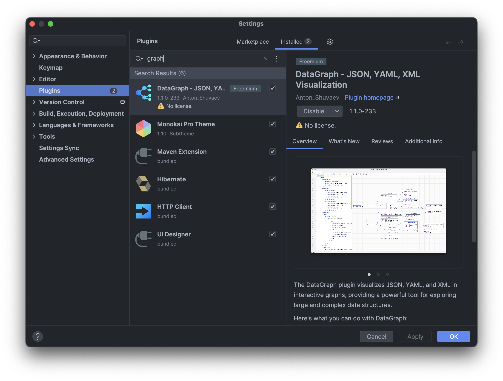
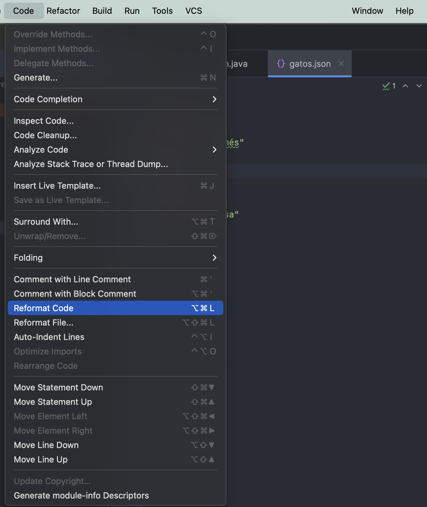

Tema 7: Colecciones¶
Duración y criterios de evaluación
Duración estimada: 14 sesiones
Resultados de aprendizaje
- Comprender la necesidad de las estructuras de datos dinámicas frente a los arrays estáticos.
- Conocer la arquitectura del framework de colecciones de Java (Collection, List, Set, Map).
- Utilizar conjuntos, listas y diccionarios para resolver problemas reales.
- Aplicar criterios de ordenación propios con
ComparableyComparator. - Conocer las operaciones funcionales de la API Stream.
- Manejar XML y JSON como formatos de intercambio de información.
Criterios de evaluación
- Se elige la estructura de datos adecuada (lista, conjunto o diccionario) según la necesidad.
- Se realizan las operaciones CRUD sobre colecciones con los tipos genéricos correctos.
- Se ordenan objetos propios mediante
Comparable,Comparatoro lambdas. - Se aplican filtros, transformaciones y reducciones con la API Stream.
- Se serializa y deserializa información con JSON (Gson) y se interpreta XML.
- Se comprenden las novedades de colecciones de Java 9 y Java 21 (
List.of,SequencedCollection).
7.1 Introducción¶
Con lo aprendido hasta ahora puedes escribir programas correctos, pero limitados por el número de datos: un número finito de usuarios, de cuentas, de incidencias...
¿Qué pasaría si tu App Banco debe gestionar millones de cuentas? No puedes declarar Cuenta c1, c2, c3.... Necesitas estructuras que:
- Almacenen muchos elementos (simple o compuestos).
- Tengan un tamaño fijo o dinámico.
- Se puedan recorrer.
- Permitan realizar operaciones CRUD (Create, Read, Update, Delete).
Esto existe: son las colecciones.
Clasificación de las estructuras de almacenamiento¶
Según lo que almacenan:
- Datos del mismo tipo: arrays, matrices, listas, colecciones, conjuntos...
- Datos de distinto tipo: clases (vistas en POO).
Según su tamaño:
- Fijo: el tamaño se especifica al crearla y no cambia (arrays, matrices).
- Dinámico: el tamaño cambia en tiempo de ejecución (listas, colecciones...).
De los arrays a las colecciones
Un array es la estructura "básica": tamaño fijo y acceso por índice. Las colecciones añaden flexibilidad: crecen solas, se borran elementos, se buscan, se ordenan...
7.2 ¿Qué es una colección?¶
Una colección es un grupo de elementos almacenados de forma conjunta en la misma estructura. Además de los datos, la colección incluye las funciones para interactuar con ellos (add, remove, size...).
En Java, el framework de colecciones tiene esta arquitectura:
graph TD
Iterable --> Collection
Collection --> List
Collection --> Set
Collection --> Queue
List --> ArrayList
List --> LinkedList
Set --> HashSet
Set --> LinkedHashSet
Set --> TreeSet- Los conjuntos y listas implementan la interfaz
java.util.Collection, que define las operaciones comunes (añadir, borrar, saber el tamaño, recorrer...). - Los diccionarios implementan
java.util.Map, que define las operaciones de pares clave/valor.
import java.util.*;
Collection<String> c = new ArrayList<>();
c.add("hola");
c.size(); // 1
c.remove("hola"); // true
c.isEmpty(); // true
import java.util.*;
Map<String, Integer> m = new HashMap<>();
m.put("Ana", 20);
m.get("Ana"); // 20
m.containsKey("Ana"); // true
Las colecciones usan tipos genéricos
Declara siempre el tipo de los elementos que almacena la colección (ArrayList<String>, Map<String, Integer>...). Los tipos crudos (ArrayList a secas) son código antiguo: compilan, pero pierden la seguridad de tipos y obligan a castear.
7.3 Conjuntos (Set)¶
Un conjunto es un tipo de colección que no admite elementos duplicados, derivado del concepto matemático de conjunto.
La interfaz java.util.Set define cómo deben ser los conjuntos y extiende Collection, aunque no añade operaciones nuevas: la gracia está en su comportamiento (sin repetidos).
Clases más utilizadas¶
| Clase | Cómo almacena | Características |
|---|---|---|
java.util.HashSet |
Tablas hash | Muy rápido. Sin orden garantizado. |
java.util.LinkedHashSet |
Tablas hash + lista enlazada | Orden de inserción. Acceso rápido. |
java.util.TreeSet |
Árbol rojo-negro | Más lento, pero ordenado (natural o con Comparator). |
import java.util.*;
public class EjemploSet {
public static void main(String[] args) {
Set<String> nombres = new HashSet<>();
nombres.add("Ana");
nombres.add("Luis");
nombres.add("Ana"); // Duplicado: NO se añade
System.out.println(nombres); // [Luis, Ana] (orden no garantizado)
System.out.println(nombres.size()); // 2
}
}
¿Cuándo usar un Set?
Cuando necesites eliminar duplicados o comprobar si un elemento existe de forma rápida. Ejemplo: lista de alumnos que se apuntan a una actividad (no puede repetirse el DNI).
7.4 Listas (List)¶
Las listas son el avance natural sobre los arrays. Añaden:
- Almacenamiento de elementos repetidos.
- Acceso por posición (índice).
- Búsqueda de elementos (obtiene su posición).
- Extracción de sublistas.
Todas implementan la interfaz java.util.List.
Clases más utilizadas¶
| Clase | Cómo funciona | Ideal para |
|---|---|---|
java.util.ArrayList |
Array que se redimensiona solo | Acceso rápido por índice y lecturas |
java.util.LinkedList |
Lista doblemente enlazada (nodos) | Muchas inserciones/borrados en los extremos |
7.4.1 Declaración e inserción¶
import java.util.ArrayList;
public class EjemploArrayList {
public static void main(String[] args) {
ArrayList<String> colores = new ArrayList<>();
colores.add("violeta");
colores.add("blanco");
colores.add("negro");
colores.add("verde");
System.out.println(colores); // [violeta, blanco, negro, verde]
}
}
7.4.2 Recorridos¶
// Recorrido clásico con índice
for (int i = 0; i < colores.size(); i++) {
System.out.println(colores.get(i));
}
// Recorrido mejorado (for-each)
for (String color : colores) {
System.out.println(color);
}
// Con un Consumer (forEach, Java 8+)
colores.forEach(color -> System.out.println(color));
7.4.3 El resto de operaciones CRUD¶
colores.get(1); // Elemento en posición 1
colores.set(1, "rojo"); // Reemplaza la posición 1
colores.add(2, "amarillo"); // Inserta en la posición 2
colores.remove(3); // Borra por posición
colores.remove("verde"); // Borra por valor (si existe)
colores.indexOf("negro"); // Posición del elemento (o -1)
colores.contains("negro"); // ¿Existe?
colores.size(); // Número de elementos
colores.isEmpty(); // ¿Está vacía?
7.4.4 Borrado condicional con removeIf (Java 8+)¶
ArrayList<String> colores = new ArrayList<>();
colores.add("violeta");
colores.add("blanco");
colores.add("negro");
colores.add("verde");
// Elimina los elementos que cumplan la condición (empiezan por "v")
colores.removeIf(c -> c.startsWith("v"));
System.out.println(colores); // [blanco, negro]
7.4.5 Almacenar objetos propios¶
Las listas pueden guardar cualquier objeto:
ArrayList<Gato> gatos = new ArrayList<>();
gatos.add(new Gato("Garfield", "naranja", "común", 10));
gatos.add(new Gato("Mishi", "naranja", "común", 5));
Novedad Java 21: SequencedCollection
Desde Java 21, todas las colecciones ordenadas (listas, ArrayDeque, TreeSet...) implementan la interfaz SequencedCollection, que aporta operaciones uniformes para los extremos y la vista inversa:
var lista = new ArrayList<>(List.of("a", "b", "c"));
lista.getFirst(); // "a" (antes: lista.get(0))
lista.getLast(); // "c" (antes: lista.get(lista.size()-1))
lista.reversed(); // vista inversa [c, b, a]
7.5 Ordenación de listas¶
7.5.1 Ordenar colecciones de tipos básicos¶
Collections.sort(lista) ordena una lista de tipos que ya implementan orden natural (String, Integer...):
ArrayList<Integer> notas = new ArrayList<>(List.of(8, 3, 9, 5));
Collections.sort(notas); // [3, 5, 8, 9]
Collections.reverse(notas); // [9, 8, 5, 3]
7.5.2 Ordenar objetos propios. Método 1: Comparable¶
Si queremos ordenar objetos propios (por ejemplo, Gato), la clase debe implementar la interfaz Comparable y definir compareTo con el criterio de ordenación.
compareTo debe devolver: negativo, 0 o positivo según el objeto actual sea menor, igual o mayor que el argumento.
// 1. Implementar la interfaz Comparable y sobrescribir compareTo
public class Gato implements Comparable<Gato> {
private String nombre;
private String color;
private String raza;
private int peso;
// constructor, getters y setters...
// Criterio: ordenar por peso de menor a mayor
@Override
public int compareTo(Gato gato) {
return this.peso - gato.peso;
}
}
// 2. Utilizar Collections.sort(lista)
import java.util.*;
public class Main {
public static void main(String[] args) {
Gato gato1 = new Gato("Garfield", "naranja", "común", 10);
Gato gato2 = new Gato("Mishi", "naranja", "común", 5);
Gato gato3 = new Gato("Hello Kitty", "blanco", "japo", 7);
ArrayList<Gato> gatos = new ArrayList<>();
gatos.add(gato1);
gatos.add(gato2);
gatos.add(gato3);
Collections.sort(gatos); // Ordena por el criterio de compareTo
System.out.println(gatos);
}
}
Ejercicio
Aplica diferentes ordenaciones con Comparable: por nombre, por raza y por peso, tanto ascendente como descendentemente. Pista: para ordenar descendente puedes usar Collections.reverse(lista) o invertir el orden de compareTo.
7.5.3 Método 2: Comparator¶
El Comparator permite definir varios criterios de ordenación sin tocar la clase Gato. Se crea una clase que implemente Comparator y defina compare.
// 1. Crear la clase con el método compare
public class PesoMenosMas implements Comparator<Gato> {
@Override
public int compare(Gato o1, Gato o2) {
return o1.getPeso() - o2.getPeso(); // De menos a más peso
}
}
// 2. Llamar al método sort de la propia lista pasándole una instancia
gatos.sort(new PesoMenosMas());
Variante con clase anónima (ahorramos crear la clase):
gatos.sort(new Comparator<Gato>() {
@Override
public int compare(Gato o1, Gato o2) {
return o1.getPeso() - o2.getPeso();
}
});
Ejercicio
Crea las clases necesarias (PesoMenosMas, NombreAZ, RazaAZ, y sus inversas) para ordenar los gatos por nombre, raza y peso, ascendente y descendentemente.
7.5.4 Método 3: Comparator con lambdas (Java 8+)¶
La forma más moderna y breve: pasar una función lambda directamente a sort.
// Los tipos de los argumentos se infieren de la lista
gatos.sort((o1, o2) -> {
return o1.getPeso() - o2.getPeso();
});
// Si la función tiene una sola línea, se pueden quitar llaves y return. Mejor así:
gatos.sort((o1, o2) -> o1.getPeso() - o2.getPeso());
// Con métodos de ayuda (Comparator.comparing...) todavía más legible:
gatos.sort(Comparator.comparing(Gato::getNombre));
gatos.sort(Comparator.comparing(Gato::getNombre).reversed());
gatos.sort(Comparator.comparing(Gato::getPeso).thenComparing(Gato::getNombre));
7.6 Consideraciones importantes: referencias¶
Las listas pueden almacenar objetos inmutables (String, Integer, Long...) y mutables (clases propias).
Dos errores clásicos:
1. Modificar el objeto "fuera" cambia lo que hay en la lista
Test p1 = new Test(11);
LinkedList<Test> lista = new LinkedList<>();
lista.add(p1); // Se guarda la REFERENCIA, no una copia
p1.setNum(99); // Cambiamos el objeto desde fuera
// La lista ahora contiene un objeto con num=99
System.out.println(lista.get(0).getNum()); // 99
2. Iterar y borrar a la vez
Borrar elementos mientras se recorre una lista con for tradicional puede saltarte elementos. Mejor usa removeIf (visto antes) o recorre hacia atrás con Iterator.
// Con gatos:
Gato gato1 = new Gato("Garfield", "naranja", "común", 10);
ArrayList<Gato> gatos = new ArrayList<>();
gatos.add(gato1);
gato1.setColor("verde"); // Cambia el color "dentro" de la lista
System.out.println(gatos.get(0).getColor()); // verde
Copia antes, si no quieres compartir
Si no quieres que el objeto de la lista se vea afectado por cambios externos, añade una copia (como hicimos con la composición en el tema anterior).
7.7 Bonus: programación funcional con la API Stream¶
La API Stream (Java 8) permite trabajar con una colección como si fuese un flujo de información, encadenando operaciones de filtrado, transformación, ordenación y presentación.
import java.util.*;
import java.util.stream.Collectors;
public class ProgramacionFuncional {
public static int multiplica10(int num) {
return num * 10;
}
public static void main(String[] args) {
// Crear una colección de enteros sin añadirlos uno a uno
ArrayList<Integer> lista = new ArrayList<>(Arrays.asList(12, 5, 8, 3, 21));
System.out.println("Original: " + lista);
// filter: quedarnos con los pares
List<Integer> pares = lista.stream()
.filter(num -> num % 2 == 0)
.collect(Collectors.toList());
// map: transformar cada elemento (num * 10)
List<Integer> por10 = lista.stream()
.map(ProgramacionFuncional::multiplica10) // referencia a método
.collect(Collectors.toList());
// sorted: ordenar
List<Integer> ordenados = lista.stream()
.sorted()
.collect(Collectors.toList());
// reduce: sumar todos los elementos
int suma = lista.stream()
.reduce(0, (acumulado, num) -> acumulado + num);
System.out.println("Pares: " + pares);
System.out.println("Por 10: " + por10);
System.out.println("Ordenados: " + ordenados);
System.out.println("Suma: " + suma);
}
}
Operaciones más usadas
filter(condición)→ deja pasar los elementos que cumplen la condición.map(transformación)→ transforma cada elemento.sorted()→ ordena (con o sinComparator).reduce(inicial, función)→ reduce todos a un único valor (suma, máximo...).forEach(acción)→ aplica una acción a cada elemento.collect(...)→ convierte el stream en colección/list/map.
Ejercicio (baraja española)
Partiendo de un programa que elige aleatoriamente 10 cartas de la baraja española, usando programación funcional:
- Muestra todas las cartas en orden normal e inverso.
- Muéstralas ordenadas por palo y valor.
- Muestra las cartas del palo
espadas(filter). - Muestra el valor numérico de las cartas (
map): el as vale 1, la sota 10, el caballo 11 y el rey 12. - Muestra las cartas que valen más de 7.
- Muestra la suma de todos los valores de las cartas (
reduce).
7.8 Diccionarios (Map)¶
Los diccionarios almacenan pares clave/valor. Todos implementan la interfaz java.util.Map.
Clases más utilizadas¶
| Clase | Comportamiento |
|---|---|
java.util.HashMap |
Sin orden garantizado. Rápido acceso por clave. |
java.util.LinkedHashMap |
Mantiene el orden de inserción. |
java.util.TreeMap |
Mantiene las claves ordenadas (natural o Comparator). |
7.8.1 HashMap en detalle¶
- Colección no ordenada de elementos.
- Se implementa en una tabla hash.
- Se aplica una función hash a la clave que determina dónde se almacena.
- Si hay colisión, el nuevo par clave/valor se enlaza al anterior.
- Acceso a través de la clave o del valor.
- Permite valores nulos, pero solo una clave nula.
7.8.2 Operaciones¶
import java.util.HashMap;
public class EjemploMap {
public static void main(String[] args) {
HashMap<String, Integer> edades = new HashMap<>();
// Inserción
edades.put("Ana", 20);
edades.put("Luis", 22);
edades.put("María", 19);
// Lectura de un valor con get
System.out.println(edades.get("Ana")); // 20
// Lectura de todas las entradas con entrySet y for-each
for (var entrada : edades.entrySet()) {
// getKey y getValue
System.out.println(entrada.getKey() + " -> " + entrada.getValue());
}
// Búsqueda de clave
if (edades.containsKey("Luis")) {
System.out.println("Luis está en el mapa");
}
// Otras operaciones
System.out.println(edades.size());
System.out.println(edades.keySet()); // Conjunto de claves
System.out.println(edades.values()); // Colección de valores
edades.remove("Luis");
}
}
7.8.3 Ejemplo de aplicación: BBDD de Bizum¶
En la App Banco se puede usar un HashMap para identificar rápidamente qué cuentas tienen asociado un teléfono para hacer Bizum:
HashMap<String, String> telefonoCuenta = new HashMap<>();
telefonoCuenta.put("600111222", "ES123456789");
telefonoCuenta.put("600333444", "ES987654321");
String cuentaAsociada = telefonoCuenta.get("600111222"); // Búsqueda instantánea
Novedad Java 9: Map.of
Para mapas inmutables pequeños, existen los métodos de fábrica estáticos:
Map<String, Integer> edades = Map.of(
"Ana", 20,
"Luis", 21
);
List<String> nombres = List.of("Ana", "Luis", "María");
Ojo: son inmutables (no se puede put/add).
7.9 Otras estructuras: XML y JSON¶
7.9.1 XML¶
XML (eXtensible Markup Language) es un lenguaje de etiquetado para estructurar, almacenar e intercambiar información.
- La información en XML está pensada para ser leída por una máquina.
- Es legible y editable con un editor de texto plano.
- Formado por nodos: se delimitan por etiqueta de apertura y cierre (como en HTML). Los nodos pueden tener atributos en su etiqueta de apertura.
<clientes>
<cliente id="1">
<nombre>Rafael López</nombre>
<telefono>1234</telefono>
</cliente>
<cliente id="2">
<nombre>María Nadal</nombre>
<telefono>1238</telefono>
</cliente>
</clientes>
7.9.2 JSON¶
JSON (JavaScript Object Notation) es un formato de texto para representar objetos. Muy útil para transmitir datos por la red.
- Permite almacenar los mismos tipos de datos que Java: cadenas, números, arrays, objetos...
- Para acceder a sus datos desde Java hay que convertirlo a objetos nativos mediante librerías como Gson (de Google).
{
"clientes": [
{ "id": 1, "nombre": "Rafael López", "telefono": 1234 },
{ "id": 2, "nombre": "María Nadal", "telefono": 1238 }
]
}
Serializar (stringify) con Gson¶
Convierte un objeto Java en una cadena de texto JSON → gson.toJson(objeto).
import com.google.gson.*;
public class EjemploToJson {
public static void main(String[] args) {
Gson gson = new Gson();
ArrayList<Cuenta> cuentas = new ArrayList<>();
cuentas.add(new Cuenta(1, new Cliente("Rafael López"), 100.0));
String json = gson.toJson(cuentas);
System.out.println(json);
// Guardar a fichero... (se hace con FileWriter, tema siguiente)
}
}
Deserializar (parse) con Gson¶
Convierte un texto JSON en un objeto Java → gson.fromJson(buffer, ClasePrincipal.class).
import com.google.gson.*;
import java.io.*;
public class EjemploFromJson {
public static void main(String[] args) throws Exception {
Gson gson = new Gson();
// El buffer se lee normalmente desde un fichero
BufferedReader buffer = new BufferedReader(new FileReader("cuentas.json"));
GestionCuentas gc = gson.fromJson(buffer, GestionCuentas.class);
buffer.close();
// Si queremos mapear un JSON a una estructura sin clase propia (ArrayList):
ArrayList<Cuenta> cuentas = gson.fromJson(
new FileReader("cuentas.json"),
new TypeToken<ArrayList<Cuenta>>() { }.getType()
);
}
}
Escritura del JSON a fichero¶
public static void escribeJSONEnFichero(String json) {
try {
FileWriter fichero = new FileWriter("cuentas.json");
PrintWriter pw = new PrintWriter(fichero);
pw.println(json);
fichero.close();
} catch (Exception e) {
e.printStackTrace();
}
}


Trabajar con APIs (flujo completo)
Para consumir un JSON descargado desde una API:
- Localizar una API pública.
- Probar la API en Postman (ver la estructura del JSON).
- Generar el esquema de clases a partir del JSON con jsonschema2pojo.
- Comprender la información del JSON y del esquema generado.
- Parsear con
gson.fromJson(buffer, ClasePrincipal.class).
7.10 Novedades de Java en colecciones¶
| Novedad | Versión | Qué aporta |
|---|---|---|
| API Stream, lambdas | Java 8 | Programación funcional sobre colecciones (filter, map, reduce...) |
List.of, Set.of, Map.of |
Java 9 | Colecciones inmutables en una línea |
removeIf, forEach |
Java 8 | Operaciones cómodas sobre Collection |
getOrDefault, putIfAbsent, computeIfAbsent |
Java 8 | Métodos cómodos de Map |
SequencedCollection, SequencedSet, SequencedMap |
Java 21 | getFirst(), getLast(), reversed() en todas las colecciones ordenadas |
| Records | Java 16 | Modelar los objetos guardados en colecciones de forma breve |
// Ejemplo del mundo real: combinar novedades
List<Gato> gatos = List.of(
new Gato("Garfield", "naranja", "común", 10),
new Gato("Mishi", "naranja", "común", 5)
);
// Gatos que pesan más de 6, ordenados por peso
List<Gato> pesados = gatos.stream()
.filter(g -> g.getPeso() > 6)
.sorted(Comparator.comparing(Gato::getPeso))
.toList(); // Java 16+: toList() sin colector
7.11 Buenas prácticas¶
- Declara siempre el tipo genérico (
ArrayList<String>), nunca tipos crudos. - Elige bien la estructura: ¿admite repetidos? → lista. ¿No? → set. ¿Búsqueda por clave? → map.
- Nombra con tipos de la interfaz (
List<String> l = new ArrayList<>();) para poder cambiar la implementación después. - En producción, ordena con
Collections.sortolist.sort; no reinventes la burbuja. - Para concatenar mucho texto usa
StringBuilder(ya lo vimos en el tema 4). - Usa
Streampara operaciones de filtrado/transformación que serían ruidosas con bucles. - Ten cuidado con las referencias: añadir un objeto a una lista no lo copia.
- Prefiere
List.of/Map.ofcuando la colección no vaya a cambiar.
7.12 Referencias¶
- Java Tutorial: The List interface (Oracle)
- Java Tutorial: The Set interface
- Java Tutorial: The Map interface
- JEP 431: Sequenced Collections
- Gson: guía de usuario
- Javarevisited: 5 librerías JSON para Java
7.13 Actividades¶
-
Crea un
HashSet<Integer>e intenta añadir tres veces el mismo número. Comprueba consize()que solo se almacena una vez. -
Escribe un programa que lea nombres por teclado y los guarde en un
ArrayList<String>hasta que el usuario escriba "fin". Después muestra el listado ordenado alfabéticamente y sin repetidos (pista: usa unTreeSetoLinkedHashSet). -
Crea la clase
GatoconComparable(peso) y la clasePesoMenosMas(Comparator). Ordena una lista de 3 o 4 gatos de las tres formas:Comparable,Comparatory lambda, y comprueba que salen igual. -
Dado un
ArrayList<Integer>con los números del 1 al 20, usa Stream para mostrar: los pares, los múltiplos de 3, el mayor, el menor, y la suma de todos. -
Implementa una mini agenda con
HashMap<String, String>(teléfono → nombre). Ofrece un menú: añadir contacto, buscar contacto, listar todos, eliminar, salir. -
Crea un programa que serialize un objeto
Library(con libros) a JSON con Gson y lo guarde enbiblioteca.json. Después, en otro programa, léelo y muéstralo. -
Convierte la lista de la App Banco (cuentas) para que se gestione con
ArrayList<Cuenta>(fuera ya los arrays estáticos). Añade y elimina cuentas, ordénalas por número e imprime el detalle de cada una. -
Investiga la diferencia entre
ArrayListyLinkedList: qué operaciones son rápidas y cuáles lentas en cada una. Pon un ejemplo dondeLinkedListgane claramente (insertar/borrar al principio).